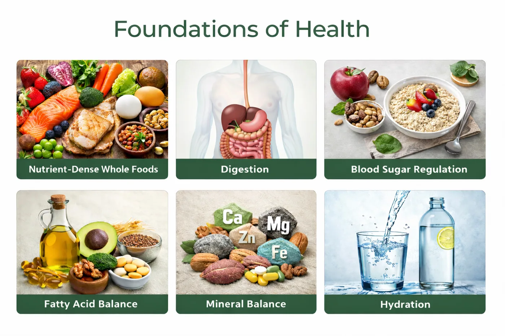

Nutritional Health Coaching with Trish Dillon is a personalized, educational service designed to help you better understand how nutrition and lifestyle habits may influence your overall wellness.
Many of our clients come to us after trying multiple approaches and still feeling unsure what their body actually needs. This process is designed to bring clarity, not confusion.
As an Nutritional Therapy Practitioner (NTP), Trish works with individuals who want practical guidance, clearer direction, and supportive accountability as they build healthier habits that fit their real lives.
Rather than offering generic advice or one-size-fits-all plans, Nutritional Health Coaching focuses on individualized education, realistic strategies, and sustainable lifestyle habits that support the body’s foundational wellness.
If you’ve never heard of a Nutritional Therapy Practitioner before, you’re not alone, and you don’t need to know the title to benefit from the process.
A Nutritional Therapy Practitioner (NTP) is a wellness professional trained in nutrition and lifestyle education that supports the body’s natural foundations of health.
NTPs focus on helping individuals understand how food quality, dietary habits, and lifestyle choices may influence overall wellness and daily functioning.
Nutritional Therapy Practitioners provide personalized education, guidance, and resources that help individuals make informed decisions about nutrition and lifestyle habits that align with their wellness goals.
Nutritional Therapy focuses on supporting the body through six core foundations: nutrient-dense foods, digestion, blood sugar balance, fatty acid balance, mineral balance, and hydration.
Rather than focusing on isolated symptoms, Nutritional Therapy Practitioners look at how these foundational areas interact with one another.
When these foundations are supported, the body is often better equipped to maintain balance, adapt to stress, and support overall resilience.

Many people feel overwhelmed by conflicting nutrition information or unsure which wellness habits truly support their body.
Nutritional Health Coaching provides a structured, supportive environment where you can explore practical nutrition and lifestyle education that is tailored to you.
During coaching sessions, we may explore areas such as:
The goal is not perfection — but greater awareness, clarity, and confidence in the choices you make each day.
For many people, this is the first time their approach feels clear, structured, and actually doable.
Whether you are:
Nutritional Health Coaching is designed to meet you where you are and move forward at a pace that feels realistic and sustainable.
Clients often appreciate this approach because it is:
Nutritional Health Coaching is often a great fit for individuals who want to better understand how nutrition and everyday lifestyle habits influence their overall wellness.
This approach is especially helpful if you:
Nutritional Health Coaching is available in person or online, making it a flexible option for individuals who want support that fits their schedule and location.
We believe it is important to be clear about what we do — and what we don't do.
Important Note
Nutritional Health Coaching services provided by B&T Natural Health & Wellness Association are educational in nature and intended to support general wellness.
We do not diagnose, treat, prescribe for, or cure medical conditions. Information provided through Nutritional Health Coaching and Nutritional Therapy services is not intended to replace medical advice, diagnosis, or treatment.
These services are designed to complement, not replace, care provided by licensed healthcare professionals. Clients are encouraged to consult with their healthcare providers regarding medical concerns.

FAQs
Still have questions?
That’s completely normal.
Here are some of the most common things people ask before getting started.
B&T Natural Health & Wellness Association is a private, membership-based wellness organization that offers educational nutrition and lifestyle services. Our approach is non-invasive and holistic, designed to help individuals better understand nutritional and lifestyle-related stress patterns that may be influencing overall wellness.
We use educational methods such as Nutrition Response Testing® and Nutritional Health Coaching to support informed decision-making. Our services are intended to support general wellness and complement — not replace — medical care.
No. We do not diagnose, treat, prescribe for, or cure medical conditions. Our services are educational in nature and focused on nutrition and lifestyle support.
Clients are encouraged to consult with licensed healthcare providers for medical diagnosis, treatment, and medical decision-making.
Our primary services include:
Nutrition Response Testing® (NRT): a non-invasive, educational assessment method used to help observe patterns related to nutritional and lifestyle stress
Nutritional Health Coaching: personalized nutrition and lifestyle education focused on whole-food nutrition, practical guidance, and sustainable habits
All services are educational, non-invasive, and individualized.
The first step is determining whether you are a Nutrition Response Testing® case. If we determine that this approach is not appropriate for you, we will let you know upfront.
If you are a Nutrition Response Testing® case, it is our experience and professional opinion that this approach can provide valuable insight and guidance to support foundational wellness through individualized nutrition and lifestyle education.
Our approach is non-invasive, personalized, and education-focused. Rather than generalized programs or one-size-fits-all recommendations, we tailor guidance based on individual nutritional and lifestyle stress patterns.
We also prioritize clarity and transparency. If our services are not appropriate for you, we will tell you.
During the initial visit, we review your health history, wellness goals, and current concerns. If appropriate, Nutrition Response Testing® may be used to help observe nutritional stress patterns.
We then discuss whether our services may be a good fit and outline possible next steps based on your individual needs and preferences.
Results vary by individual. Our role is to provide personalized nutrition and lifestyle education intended to support general wellness.
We do not guarantee outcomes, as individual experiences depend on many factors including consistency, lifestyle choices, overall wellness status, and individual circumstances.
B&T Natural Health & Wellness Association operates as part of the Professional Wellness Alliance (PWA), a private membership community created to help protect access to holistic and natural wellness services.
Membership establishes a private relationship that allows us to offer non-invasive, educational wellness services responsibly within today’s regulatory environment. This structure supports transparency, protects both member and provider rights, and helps ensure continued access to the services we offer.
There is no charge for membership, and members may cancel at any time.
Yes. Our services are designed to complement medical care, not replace it.
Many members choose to work with us alongside their licensed healthcare providers.
The first step is completing the simple, one-page PWA membership agreement.
Next, you’ll schedule an initial consultation. This allows us to determine whether Nutrition Response Testing® is appropriate for you and whether our educational wellness services align with your goals.
© 2026 B&T Natural Health & Wellness Association — Private Membership Association.
Services provided by a Licensed Member Provider through the Professional Wellness Alliance.
Educational wellness services are available to members of B&T Natural Health & Wellness Association.
B&T Natural Health & Wellness Association is a private membership association. All services are educational in nature and intended to support general wellness through nutrition and lifestyle guidance. We do not diagnose, treat, prescribe, or cure medical conditions.
Information provided through Nutrition Response Testing®, Nutritional Health Coaching, and Neuro-Matrix Technique® is not intended to replace medical advice, diagnosis, or treatment and is designed to complement, not replace, care provided by licensed healthcare professionals. Members are encouraged to consult with their healthcare providers for medical concerns.
Wellness starts with understanding.